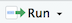
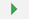
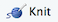

Assignments are typically released at the beginning of each lab and are due in a week. They are located at the end of each lab’s guide. Assignments have two components:
- Executing data analysis tasks - for example, create a map or run a statistical model.
- Answering conceptual questions - for example, interpret results that were produced from a data analysis task.
In order to get full credit for each assignment, you will need to
- Show the appropriate statistical results for a given question (e.g. map, table, statistics).
- Show the appropriate code producing the results.
- Provide correct written answers.
Any response requiring a data analysis task must be supported by code you generate to produce your result. Just examining your various objects in the “Environment” section of R Studio is insufficient—you must use scripted commands. You can ask for help from the TAs and work with other students. However, you must submit your own assignments.
R Markdown
You will use R Markdown to write up all R related assignments. R Markdown is a simple formatting syntax for authoring html, pdf, and Microsoft Word documents in RStudio. For each R related assignment, you will upload onto Canvas an R Markdown document, which has an .Rmd extension, and its knitted .html file. This will allow the TAs to create an easy-to-read document to grade; more importantly, you will also get to practice (1) writing scripts, (2) keeping track of the analyses you run, and (3) organizing your output.
To be clear, R is a programming language. RStudio is an application. R Markdown is a markup syntax to convert R script and text into a word, pdf or html document.
In RStudio, install the package rmarkdown using the install.packages() command. Type the following code in your RStudio Console.
install.packages("rmarkdown")
Opening an R Markdown file
An .Rmd template will be provided for each assignment. A generic template can be found here. Download the week’s assignment template and save it into an appropriate folder on your hard drive. File management is important here - save this template into a folder that will contain all the files (data, Rmd, html, etc.) related to that week’s assignment. When you knit your Rmd (we’ll get to what this means below), this is where your html file will go.
To open an .Rmd file in RStudio, select File -> Open File and navigate to the folder you saved the assignment template in and select the file. You should see the R Markdown file pop up on the top left portion of your RStudio interface.
Authoring an R Markdown document
R Markdown documents contain 3 major components:
- A YAML header surrounded by —
- Chunks of R code surrounded by ```
- Text mixed with simple text formatting using the Markdown syntax
R Code chunks
Always submit the R code producing your results. You show your R code in R Markdown through R code chunks. R code is inserted in between ```{r} and ```. For example, to designate 1+1 as R code, it will look like the following in your R Markdown document
```{r}
1+1
```
Your R code must reside inside an R code chunk in order for it to be processed as R code (otherwise R Markdown will think it is text). R will often spit out messages that are not necessary for answering the assignment question. You can add options to the R code chunk to hide these unnecessary messages by adding warning=FALSE and message=FALSE as follows.
```{r, warning=FALSE, message = FALSE}}
1+1
```
You’ll need to test code to make sure it is running properly. Rather than writing all the code and then running it at the end, run them in chunks. To run code in just one chunk, click on the R code chunk you want to run and either click on  and select Run Current Chunk or click on  located on the right corner of the chunk. For example, let’s say the first question in an assignment is (1) Add one plus one. In your R Markdown document, type in the following to answer question 1
```{r, warning=FALSE, message = FALSE}}
1+1
```
Run that code chunk first to make sure it works (you should get 2!). Then proceed to the next question.
Note that you when you run an R code chunk, its output is embedded within your R Markdown document as in Figure 1
When you are testing your code, it is better that code results are shown in your RStudio Console (the bottom left window). To get RStudio to do this, select the “Tools” menu and select “Global Options”. Select “R Markdown” from the left-hand side and deselect the check box “Show output inline for all R Markdown documents”. The output from your code should now be shown in the console.
Text answers
Explain results and answer questions by inserting text into your document. For example, let’s say you see this in one of your assignments
1+1
1. What does the above code do?
2. What is the result of 2+2?
To get full credit, you would type in your R Markdown document the following
1. What does the above code do?
The code adds 1 + 1
2. What is the result of 2+2?
```{r, warning=FALSE, message = FALSE}
2+2
```
The result of 2+2 is 4.
Notice that the text “The code adds 1 + 1” and “The result of 2+2 is 4” are not inside the R code chunk.
Knitting
Once you’re done writing up your assignment, you’ll need to submit your .Rmd document and the knitted .html document through Canvas. RStudio’s “Knit HTML” button will compile the document to an HTML and open a preview. To Knit your document click . A preview will pop up in a new window and the .html file will be saved in the folder where your Rmd file resides. If your R Markdown file has some issues, an error will pop up in the bottom left window of RStudio. Carefully read the description of the error, which will also contain the line number of the offending code.
If you have a Mac and you are getting an error when knitting, you may need to download the most recent version of XQuartz, which can be downloaded here
Summary
The proper workflow for each assignment will be
- Go through the step-by-step lab guide.
- Save the R Markdown assignment template linked to each assignment in an appropriate folder on your hard drive.
- Open this R Markdown file in RStudio.
- In this document, answer all the assignment questions.
- Most of the questions will ask you to run code. Show that code in an R Markdown chunk. Bottom line: Any code you used to get a result should be in your assignment.
- Make sure your code works. If it doesn’t, then partial to no credit. Run code one chunk at a time to make sure it is working. Note that there are multiple ways to get to an answer in R - we will not grade on how efficient your code is unless stated so in the question.
- Most of the questions will ask you to explain your code/results.
- Once you feel good about your answers, knit it.
- Submit the
.Rmd and .html files on Canvas before the designated due time.
- Smile, pat yourself on the back, and have some ice cream.
Others things to know
- You can spell-check your assignment before handing it in by navigating the menu Edit -> Check Spelling
- If you have Microsoft Word installed on your system you can pull down the menu associated with the Knit button and select the Knit to Word option and, if all goes well, you will be presented with a Word document.
- You can also create a pdf document, but you’ll need to download. Tex on your system. Here’s an explanation on how to get a pdf.
- Your R Markdown file needs to have the extension
.Rmd (don’t create arbitrarily named files).
- The default editor settings are to insert matching parentheses and quotes; if you find that this intrudes on your workflow, you can disable it via Tools -> Global Options -> Code then uncheck Insert matching parens/quotes.
Getting R Markdown Help
Whenever you are editing R Markdown documents in RStudio, you can display an R Markdown cheat sheet by going to Help > Cheatsheets > R Markdown Cheat Sheet. A basic introduction to R Markdown can also be found in Chapter 21 in R for Data Science.
Website created and maintained by Noli Brazil